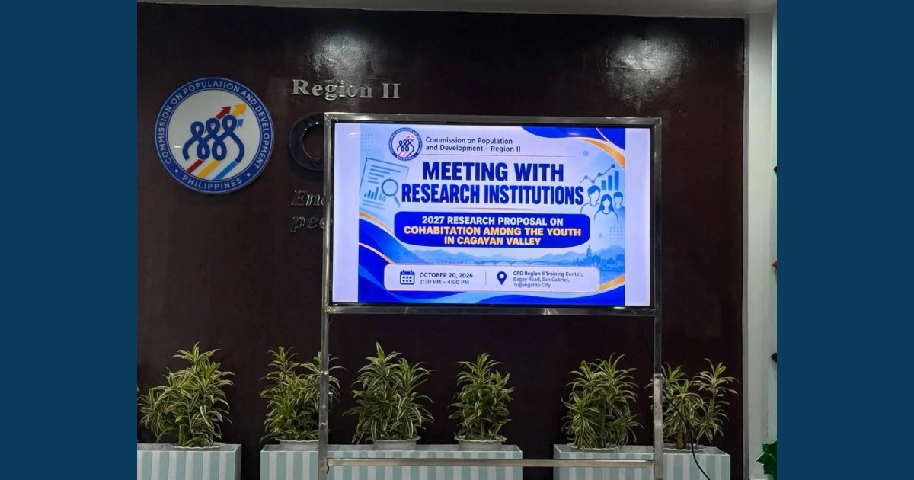

MCNP–ISAP Joins Research Institutions’ Meeting on 2027 Cohabitation Research Proposal for Cagayan Valley

The Commission on Population and Development (CPD) Region II convened a meeting with research institutions on October 20, 2026, in connection with the proposed 2027 research on cohabitation among the youth in Cagayan Valley, highlighting the importance of research collaboration in examining social and population-related concerns affecting young people in the region.
Read full article